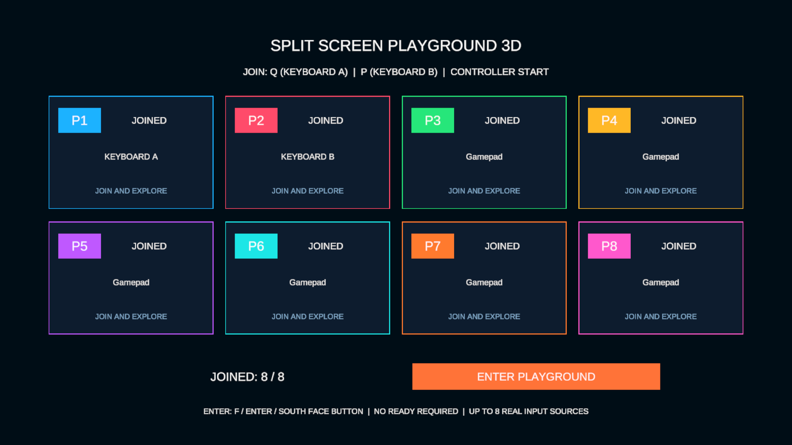
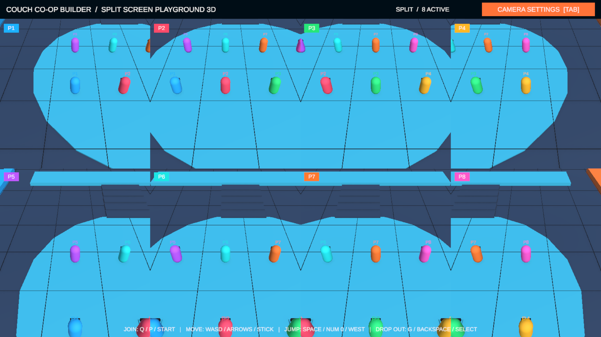

Split Screen Playgrounds¶
These 1–8-player camera examples complement Quick Start. Open SplitScreenPlayground3D (Assets/LevelArgento/CouchCoopBuilder/Samples/SplitScreenPlaygrounds/Scenes/SplitScreenPlayground3D.unity) or SplitScreenPlayground2D (Assets/LevelArgento/CouchCoopBuilder/Samples/SplitScreenPlaygrounds/Scenes/SplitScreenPlayground2D.unity) and enter Play Mode. These independent scenes use URP and the installed Input System/Smart UI Focus & Navigation integration. Their lightweight join screen needs no separate lobby scene, Rocket Rumble content or Cinemachine. They are not automatically registered in the project's scene configuration; add the chosen scene to the scene list used by your active Build Profile when building a sample.
Try it¶
- Join with Q (Keyboard A), P (Keyboard B), or a controller's Start. The authored 4x2 grid shows eight equally sized P1-P8 cards with waiting/joined state and input source. Up to eight real input sources may join; the two keyboard roles share one physical keyboard. There is no Ready requirement.
- Select ENTER PLAYGROUND with F (Keyboard A), Enter (Keyboard B), a controller profile's Confirm (south face button on standard gamepads), or a mouse click. One through eight joined players may enter. Existing representations, contexts and InputUsers are retained; gameplay movement/settings yield to the join screen until entry.
- Move with WASD, arrow keys, or the controller stick. Jump with Space, numpad 0, or the gamepad's west face button (X on Xbox / Square on PlayStation). These scenes use the framework's default gameplay bindings.
- Open Camera Settings with Tab, its mouse button, or a joined player's Pause binding (T / Y / Start). The Split Screen control receives focus. Player movement yields while the panel is open; world physics continues.
- Use up/down to select and left/right to change. Keyboard A uses W/S, A/D, F; Keyboard B uses arrows, Enter; gamepads use stick/D-pad, south face button. Mouse arrows and Back also work. Close with Escape, gamepad east, or Back. Layout rows are hidden while Split Screen is OFF.
- Toggle Shared -> Split -> Shared -> Split. Change both two-player layouts and all four three-player layouts. Camera settings are scene-local and begin with Split Screen OFF (shared view), two-player Vertical, and Top 2 / Bottom 1.
- Drop out with G / Backspace / controller Select. Rejoin with the same source's Q / P / Start. Drop Out reserves the original session and PlayerIndex; it destroys that sample representation and recreates it at its spawn on rejoin. It is distinct from temporary DeviceLost, which retains the representation and view.
Configured generic joysticks use their GenericControllerProfile controls. The scene bootstrap includes the existing DragonRise profile; add other recognized profiles to its Shared Joystick Input list. Matching/pairing and gameplay binding resolution remain framework responsibilities.
Integration to read¶
- PlaygroundSessionProvider implements public
IGameplayPlayerProviderand supplies a simple authored prefab per context toGameplayPlayerSetup. It owns representation creation/destruction, eight spawn transforms, participant collision exclusions and palette. Sessions, InputUsers and input actions are provided by the framework. - PlaygroundJoinPanel reads existing contexts for eight authored cards and invokes the authored Enter button from each player's owned Confirm action. It creates no sessions/devices/InputUsers. The join panel is the only navigation owner while visible; settings yield until entry. Spawns use two clear 3D plaza rows and eight non-overlapping 2D floor positions.
- PlaygroundCameraSettings calls public
GameplayCameraManager.SetSplitScreenEnabled,SetTwoPlayerLayoutandSetThreePlayerLayout. One settings router reads the existing owned menu actions. Smart UI Focus & Navigation manages focus recovery; the UI module handles pointers only, with no second move/submit/cancel router. All visible controls and HUD are saved in the scenes. - The manager owns assignment, camera lifetime, active viewport packing and the single AudioListener policy. Both scenes use its camera-prefab source and the same default layout provider. Active
PlayerIndexvalues pack in ascending order even when there are gaps. - PlaygroundFollowCamera3D reads its public
GameplayCameraAssignment.Representation, follows smoothly with a fixed 45-degree heading, and uses a little more distance for narrow viewports. Its perspective prefab is independent of player facing. Shared 3D uses a fixed authored high-angle overview that covers the usable playground. - PlaygroundCamera2D supplies orthographic behavior. Individual cameras follow the assigned representation; the shared camera frames the active group using the public setup lookup. Follow size, maximum shared size and simple level bounds are inspector settings. Extreme separation zooms the shared view out rather than tethering players.
- PlaygroundPlayer3D / PlaygroundPlayer2D read only their own
GameplayPlayerBinding.Input. They demonstrate move, grounded jump and facing. Falling below the sample floor returns the same representation to its spawn; there is no combat, score, health or full game loop.
The follow scripts are sample implementations. GameplayCameraManager does not require these behaviors. Replace them with your project's camera behavior while keeping the public assignment.
Presentation and limits¶
The 3D deck has four color districts, a central plaza, stepped terraces, ramps, a bridge and modest obstacles. The 2D stage has four districts, increasing platform heights and small floor gaps. Player colors and compact P1-P8 markers match the framework conventions.
See the authoritative 1–8 layout table for selectable 2P/3P and automatic 4–8 arrangements. Viewport badges use one-based P1–P8 labels for the actual zero-based PlayerIndex, not the packed viewport number. The header and Camera Settings stay global above the cameras.
Eight cameras render the scene eight times. Small viewports reduce detail/readability and increase rendering cost. This sample has one unshadowed directional light in 3D, unlit materials in 2D, no post-processing and no particles. Profile your own content and target hardware. Shared overview players can be small; the 3D follow example has no occlusion avoidance or camera collision rig, so geometry can briefly obscure a player. The 2D bounds limit empty edges in individual views; an extremely wide shared view necessarily shows space outside the vertical level.
Try your integration¶
Join the player count your game supports, enter, and toggle Shared/Split Screen. Confirm each view follows its owning representation and only one assigned-camera AudioListener is active. Test two-/three-player choices and automatic four-/five-/six-/seven-/eight-player layouts. Drop Out a middle player: views pack by ascending PlayerIndex without renumbering the surviving sessions. Rejoin the same source, test actual Device Lost separately, then exit Play Mode and check for teardown errors.
Customize your own copies of the saved scenes and prefabs directly. These examples demonstrate camera integration, not a complete game or a promise of camera framing/performance for every level.

Figure 6. Eight authored Playground join cards. This independent scene does not require character Ready.

Figure 7. The Playground demonstrates eight independent camera assignments. Profile performance for your own content.